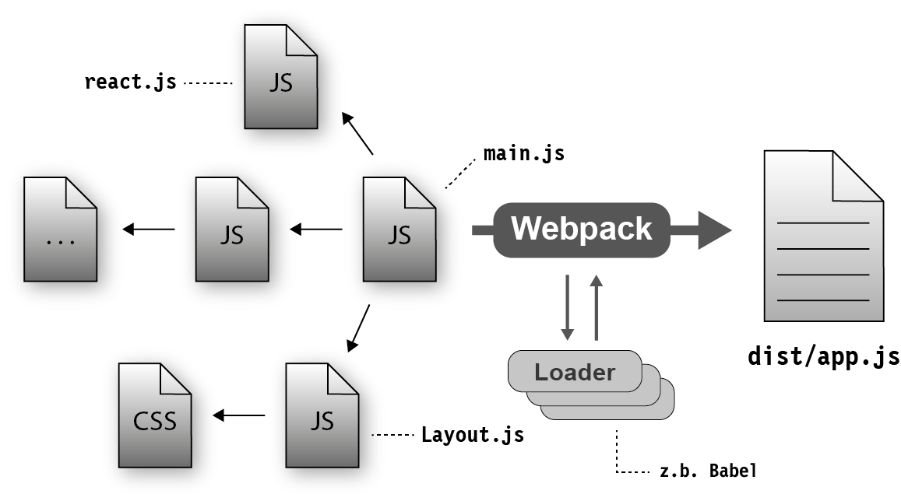
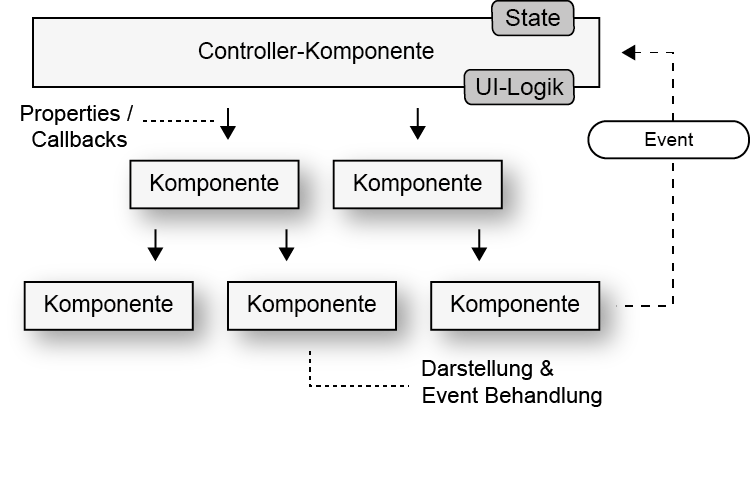
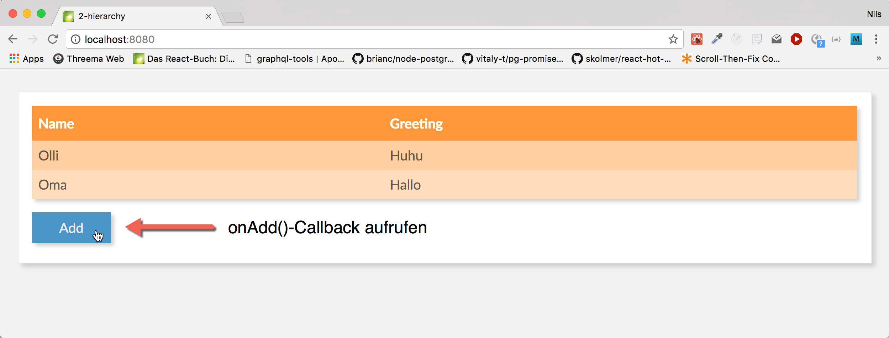
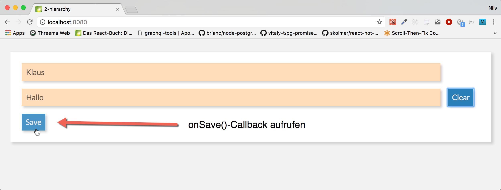

React Workshop - Vorbereitung
Falls noch nicht gemacht:
git clone -b gh-pages https://github.com/DJCordhose/react-workshop.git- Im geklonten Verzeichnis:
npm install - Im geklonten Verzeichnis:
npm run setup - In
code/workspacewechseln - Ausführen:
npm start - Browser öffnen: http://localhost:8080
Folien: Im geklonten Verzeichnis 2017_mobx_router.html
React Workshop
Day I
- Part 0: Setup and Introduction into React (shorten and translate)
- Part I: React and ES6 Basics (shorten and translate)
- Part II: Composing Components (shorten and translate)
- Part III: Remote-Calls and Promises (shorten and translate)
- Part IV: Introduction to Redux (write)
- Part V: Bridging to Hops and Malt (no slides)
Teil 0
React-Einführung und Build-Prozess
React
- Framework für Facebook und viele andere
- Komponenten kapseln Template und Logik
- Deklarativ
- Abstraktion vom DOM: f(model) -> UI
- Minimales API
- Ein-Weg-Data-Binding: Zustandsänderungen stellen Komponente komplett neu dar
- Kann im Browser und auf dem Server rendern
React Komponenten
- Werden als ES6 Klasse oder Funktion implementiert
- Keine Templatesprache (stattdessen JavaScript)
- Templates können HTML-artige Syntax enthalten (JSX)
class HelloMessage extends React.Component {
render() {
return <h1 className='title'>Hello, World!</h1>
}
}
Hello World React
DemoHello World React
class HelloMessage extends React.Component {
render() {
return (<div>
<input ref={input => this.input = input}
onChange={event => this.updateModel(event)}
value={this.state.greeting} />
<p>{this.state.greeting}, World</p>
<button
onClick={() => this.reset()}>
Clear
</button>
</div>);
} constructor(props) {
super(props);
this.state = {greeting: this.props.greeting};
}
updateModel(event) {
this.setState({greeting: event.target.value});
}
reset() {
this.setState({greeting: ""});
this.input.focus();
}
}ES6: Klassen
class Person {
constructor(name) {
this._name = name;
}
get name() {
return this._name;
}
}
class Programmer extends Person {
constructor(name, language) {
super(name);
this.language = language;
}
code() {
return this.name + " codes in " + this.language;
}
}const programmer = new Programmer('Erna', 'JavaScript');
console.log(programmer.code());
console.log(programmer instanceof Programmer); // true
console.log(programmer instanceof Person); // trueES6: Arrow Functions
const displayInPage = (text) => {
return document.body.innerHTML +=
`${text}
`;
};const displayInPage = text => document.body.innerHTML += `${text}
`;
Aufruf
// index.html
<html>
<body>
</body>
<script src="dist/main.js"></script>
</html>
// main.js
import HelloMessage from './HelloMessage';
const mountNode = document.getElementById('mount');
ReactDOM.render(<HelloMessage greeting="Hello"/>, mountNode);
Buildprozess
- ES6- und JSX-Code muss nach ECMAScript 5 übersetzt werden
- Typische Werkzeuge
- Babel (Compiler)
- Webpack (Bundler)
- Webpack Dev Sever (HTTP Server mit Hot Reload)
Webpack und Babel
Übung: React Hello-World
Mach dich mit den Werkzeugen vertraut und schreib deine erste React-Komponente
Schritt #1: Tool-Chain starten
Nutze das workspace-Verzeichnis in diesem Repository
Hier ist eine Tool-Chain mit Webpack und Babel vorbereitet
- Evtl. dafür einen Proxy konfigurieren http://wil.boayue.com/blog/2013/06/14/using-npm-behind-a-proxy/
npm install(auf oberster Ebene)npm run setup(auf oberster Ebene)cd code/workspacenpm run devserver- Öffne http://localhost:8080 im Browser
- Wenn auf der Seite 'Hello, World' steht, ist alles gut
Schritt #2: Deine erste React-Komponente
- Ersetze die "statische" Komponente (HelloMessage) mit der React-Komponente aus dem vorherigen Beispiel aus den Folien
- Experimentiere mit der Anwendung, mache einige Änderungen, wie z.B.
- Alle Eingaben sollen in Großbuchstaben auftauchen
- Gib irgendeine Rückmeldung wenn die Eingabe erfolgreich gelöscht wurde
Teil I
React-Komponenten und ES6 Grundlagen
Ziel-AnwendungThemen
- Rendering
- Properties und Zustand
- Refs
ES6-Referenz
React: Rendering
- Jede React-Komponente braucht eine
render-Methode: - wird aufgerufen beim ersten Rendering und wenn sich der Zustand ändert
- kann HTML-artige JSX-Syntax nutzen
- JSX kann pures JavaScript in geschweiften Klammern enthalten (
{})
class GreetingDetail extends React.Component {
render() {
return (
<input ref={input => this.input = input}
onChange={event => this.updateModel(event.target.value)}
value={this.state.greeting} />
{this.state.greeting}, World
);
}
// ...
}
React: Rendering #2
- DOM-Events werden in React-Events verpackt
- React-Events haben weitgehend selbe API wie DOM-Events
- Es gibt keine automatische Bindung an Modelle
class GreetingDetail extends React.Component {
render() {
return (
<input ref={input => this.input = input}
onChange={event => this.updateModel(event.target.value)}
value={this.state.greeting} />
{this.state.greeting}, World
);
}
updateModel(greeting) {
this.setState({greeting});
}
// ...
}
ES6: Erweiterte Objekt-Literale
const name = 'Oma';
const person = {
// ES5: name: name
name
};
console.log(person.name); // Oma
ES6: Module, Importe und Exporte
ES6: Export einer einzigen Klasse
// Person.js
class Person {
// ...
}
export default Person;
ES6: Import
// Programmer.js
import Person from './Person';
export default class Programmer extends Person {
// ...
}
ES6: Benannte Exporte
// util.js
export function displayInPage(text) {
document.body.innerHTML +=
`${text}
` ;
}
// or
export { displayInPage };
import {displayInPage} from "./util";
displayInPage('Hello, World');
ES6: Destructuring von Objekten
const person = {
name: 'Olli',
email: 'oliver.zeigermann@gmail.com'
};const {name, notThere} = person;
console.log(`name=${name}`);
// name=Olli
console.log(`notThere=${notThere}`);
// notThere=undefined
React: Properties und Zustand
- Properties werden der Komponente von außen übergeben (und nicht verändert)
- Zustand (State) ist eine innere Eigenschaft der Komponente (die verändert werden kann)
- Beides sind Objekte mit Key-Value-Paaren
- Beide können an Unterkomponenten übergeben werden
Properties einer Komponente
- Properties werden von außen über den Konstruktor übergeben
- Properties dürfen nicht verändert werden
- Zugriff über
this.props
class TitleComponent extends React.Component {
constructor(props) {
super(props);
}
render() {
return <h1>{this.props.title}</h1>
}
// ...
}
<TitleComponent title='Hello World' />
Zustand einer Komponente
- Beispiel: Inhalt eines Eingabefelds, Daten vom Server
- Werte üblicherweise immutable
- Initialisieren im Konstruktor mit
this.state={} - Zustand lesen über
this.state - Zustand setzen über
this.setState()- kein "reiner" Setter
- Führt alten und neuen Zustand zusammen
- Löst erneutes rendern der gesamten Komponente aus
Beispiel: Zustand einer Komponente
class GreetingDetail extends React.Component {
constructor(props) {
super(props);
this.state = { name: 'Klaus' };
}
updateModel(event) {
// Zustand ändern: Komponente wird neu gerendert
this.setState({name: event.target.value});
}
render() {
return <input value={this.state.name}
onChange={e => this.updateModel(e)} />
}
// ...
}
Render Zyklus

Virtual DOM

React: Refs
- Beim rendern kann man an eine Referenz des unterliegenden DOMs kommen
- die DOM-Referenz kann einer Funktion übergeben werden
- Diese Referenz kann man z.B. als Member-Variable speichern
class HelloMessage extends React.Component {
render() {
return (
<input ref={input => this.input = input} />
<button
onClick={() => this.input.focus()}>
Focus
</button>
);
}
}
Übung: Detail-Ansicht für unsere Gruß-Anwendung
Erzeuge eine Komponenten mit der man einen Namen und eine Grußformel eingeben kann
Schritte
Erweitere deine erste React-Komponente im workspace-Ordner
- benenne deine Komponente in
GreetingDetailum - du brauchst zwei Eingabefelder, die
nameundgreetingim Zustand der Komponente setzen - für etwas Styling kopiere das Material in
code/material/1-detailin deinenpublic-Ordner - Zusatzaufgabe: Erweitere deine Komponente so, dass man von außen Properties übergeben kann, die den Zustand initialisieren
Teil II
Komponentenhierarchien
Komplette Anwendung aus Komponenten bauen
Ziel-AnwendungReferenz
Themen
- Komponenten als Funktion
- Darstellung von Listen und Keys
- Architektur-Idee: Controller-Komponente und View-Komponente
- Durchreichen von Zustand und Callbacks
- PropTypes
Komponenten als Funktion
- Komponente ist eine einfache Funktion
- entspricht der
render-Methode - Properties werden als Parameter übergeben
- Zurzeit nur ohne Zustand und ohne Lifecycle-Methoden
function Layout(props) {
return (
{props.children}
);
}
Listen und Keys
- JSX bietet nichts für Listen
- Ausgabe typischerweise über
Array.map - Elemente einer Liste brauchen einen eindeutigen key
const greetings = [{
id: 0,
name: 'Olli',
greeting: 'Huhu'
},
{
id: 1,
name: 'Oma',
greeting: 'Hallo'
}
];
const body = greetings.map(greeting =>
<tr key={greeting.id}>
<td>{greeting.name}
<td>{greeting.greeting}
</tr>);
Controller und Child-Views
Durchreichen vom Zustand und Callbacks
- Funktioniert beides über Properties
class GreetingController extends React.Component {
render() {
const {greetings} = this.state;
return (
<GreetingMaster greetings={greetings}
onAdd={() => this.setState({mode: MODE_DETAIL})}
);
}
// ...
}
Properties übergeben mit Object-Spread
- Übergibt alle Eigenschaften eines Objektes als individuelle Properties
class GreetingController extends React.Component {
const greeting = { name: 'Klaus', greeting: 'Hello' };
render() {
return <GreetingDetail {...greeting} />
// entspricht:
// <GreetingDetail name='Klaus' greeting='Hello' />
}
}
PropTypes
- Eine Komponente kann deklarieren, welche Properties sie erwartet
- Auch der Typ kann angegeben werden
- Fehlende / falsche Properties führen zu Laufzeitfehlern
- Mögliche Typen
GreetingDetail.propTypes = {
greeting: PropTypes.shape({
name: React.PropTypes.string.isRequired,
greeting: React.PropTypes.string.isRequired
}),
onAdd: PropTypes.func.isRequired
};
Übung: Eine komplette Anwendung zusammen setzen
Füge deinen Detail-View und einen Master-View über eine Controller-Komponente zusammen
Schritte
- kopiere das Material aus
code/material/2-hierarchyin deinen src-Ordner - erweitere im
GreetingControllerdie render-Methode, so dass dein Detail-View ebenfalls angezeigt wird, wenn der Benutzer den Add-Button klickt - dort gibt es bereits einen Kommentar, der dir die richtige Stelle anzeigt und weitere Details enthält
- übergib einen Callback der
addGreetingnutzt - im deinem
GreetingDetailbrauchst du einen neuen Knopf, der mit dem neuen Gruß den Callback aufruft
Architektur Beispiel-Anwendung

GreetingMaster
GreetingDetail
Teil III
Remote-Calls gegen Server
Ziel-AnwendungHerausforderungen
- Wo speichern wir?
- Wie machen wir das Laden und Speichern technisch?
- Wie funktioniert asynchrone Verarbeitung in React?
- Wo steht der Code zum initialen Laden der Grüße?
fetch
Browser-API zum Laden und Speichern von Daten
fetch(url, {
method: 'PUT',
headers: {
'Accept': 'application/json',
'Content-Type': 'application/json'
},
body: JSON.stringify(payload)
})
.then(response => response.json())
.then(json => /* ... */)
.catch(ex => console.error('request failed', ex));
Promises
fetch
const url = `${BACKEND_URL}${path}`;
return fetch(url)
.then(response => response.json())
.then(json => /* ... */)
.catch(ex => console.error('request failed', ex));
Ein Promise ist ein Versprechen auf einen Wert
Wird evtl. erst in der Zukunft eingelöst
Erzeugen und asynchron reagieren
const promise = new Promise(resolve =>
setTimeout(
() => resolve('Result from promise'),
1000)
);
promise.then(value => console.log(value));
// Output after 1 second: Result from promise
Verkettete Ausführung
const promise = new Promise(resolve =>
setTimeout(
() => resolve('Result from promise'),
1000)
);
// then returns a new promise
const promise2 = promise.then(value => `${value} plus stuff`);promise2.then(value => console.log(value));
// Output after 1 second: Result from promise plus stuff
Fehler führen zum Abbruch der Chain
Allerdings muss man etwas tun, um das mitzubekommen
Catch-Klausel
Promise
// creates and directly resolves promise
.resolve('Result from promise')
.then(x => {
// this will be printed
console.log(x);
})
.then(() => {
console.log('This will be printed');
})
// this will NOT be printed as no error occured
.catch(e => console.log('error: ', e))
// Output:
// Result from promise
// This will be printedCatch-Klausel im Fehlerfall
Promise
// creates and directly resolves promise
.resolve('Result from promise')
.then(x => {
// this will be printed
console.log(x);
throw new Error('Something went wrong');
})
.then(() => {
console.log('This will NOT be printed');
})
// this will be printed
.catch(e => console.log('error: ', e))
// Output:
// Result from promise
// error: [Error: Something went wrong]Catch-Klausel bei Ablehnung
Promise
// creates and directly rejects promise
.reject('Promise rejected')
.then(x => {
// this will NOT be printed
console.log(x);
})
.then(() => {
console.log('This will NOT be printed');
})
// this will be printed
.catch(e => console.log('error: ', e))
// Output:
// error: Promise rejectedÜbung: Laden und Speichern der Daten von/auf einem Server
Entwickle auf Basis von fetch eine Version, die die Daten auf dem Server laden und dort wieder speichern kann
Der Server ist bereits vorgegeben und kann mit npm start im Root-Verzeichnis gestartet werden. Er ist dann unter Port 7000 erreichbar
Part IV
State Management using Redux
ApplicationReference
Redux Core: http://redux.js.org/
Binding to React: https://github.com/reactjs/react-redux
Motivation
State distributed over many components can make applications hard to understand and debug
Often more than one component depends on a certain part of state - especially hard to do when components are not even in the same hierarchy
Redux extracts state management and handlers from React components
Render Cycle in Pure React

Redux Extracts Responsibilities

Resulting Redux Architecture

Event-Handlers become Action-Creators
export function setFilter(filter) {
return {
type: SET_FILTER,
filter
};
}
- Action-Creators create Action-Objects
- Actions are command like structures of things to do by application
- They are passed to all reducers using dispatch method of store
- Actions consist of type and random payload
Action-Creators making server calls
export const loadGreetings = dispatch => {
return fetch(BACKEND_URL)
.then(response => response.json())
.then(greetings => dispatch({
type: SET_GREETINGS,
greetings
});
);
};
- As call is async, we need to get the dispatch method passed in
Action-Creators are the only part of the application allowed to perform async operations, like server calls
A single Store holds all State
import { Provider } from 'react-redux';
import { createStore } from 'redux';
import { rootReducer } from './reducers';
// http://redux.js.org/docs/api/createStore.html
const store = createStore(
rootReducer // reducer
);
ReactDOM.render(
<Provider store={store}>
<GreetingController />
</Provider>,
mountNode
);
- Central part of application
- Provides the dispatch method used in action creators
- Made available to all Components using Provider wrapper
Middleware sits between dispatch and store
import { applyMiddleware } from 'redux';
import thunk from 'redux-thunk';
const store = createStore(
rootReducer, // reducer
applyMiddleware(thunk) // middleware as enhancer
);
- Thunk middleware serves as a de-facto standard
- Passes in the dispatch method into the async action creator
- A thunk is a function that wraps an expression to delay its evaluation.
- You don't have to worry about it for basic Redux usage
Reducers contain core (business) logic
import {combineReducers} from 'redux';
// http://redux.js.org/docs/api/combineReducers.html
export const rootReducer = combineReducers({
greetings, // updates greeting partial state
filter,
mode
});
- A pure function that takes old state plus action and returns a new state
- Often composed of reducers only updating partial state
Partial Reducers
const mode = (state = MODE_MASTER, action) => {
switch (action.type) {
case SET_MODE:
return action.mode;
default:
return state;
}
};
- Initialize part of the state (often using default parameters)
- Never mutate state
- Always return a (not necessarily complete) copy of state fragment
- Depend on action and state structure
- Reducer - connected component - Excercise: make your application Redux, was vorgeben in Material?
Excercise: Complete Redux Application
The application is already working with Redux, but filtering from the Chart still needs to be done
Steps
- Copy all material from
code/material/5-reduxto your source folder - TODOs have been added to actions, reducers and GreetingController to guide you through the exercise
- Use the existing filter code from the previous step as a starting point
- Add an Action Type and an action creator for filtering
- Add a reducer to handle such an action and add it to
combineReducers - In
GreetingControllerimport the action creator and pass it down to the Chart to react to filtering events